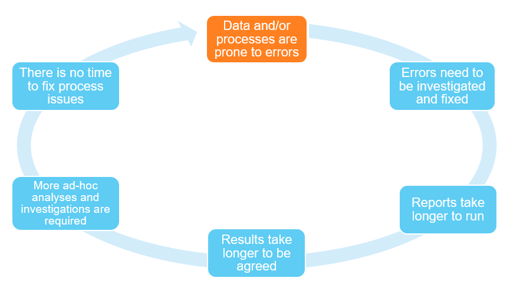
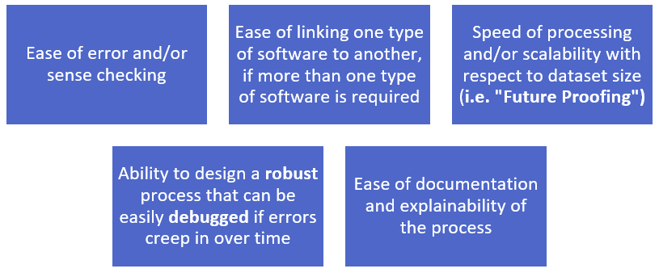
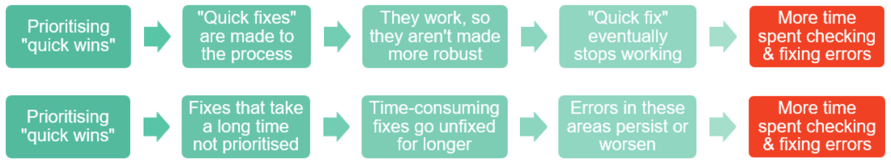

19 Practical Considerations Part 1: Time & Resource Limitations
20 Practical Considerations Part 1: Time & Resource Limitations
This article was written by Isabelle Williams and originally published on 23 April 2022.
20.1 Why is Machine Learning not commonly being adopted in the UK Reserving Market?
There are many reasons why Machine Learning (“ML”) techniques are currently not being adopted in the UK reserving market. Previously, the issues faced were more theoretical than practical. However, in recent times, interest in this area has grown, and many companies are now considering investing in ML techniques for their reserving teams.
As stated in the MLR Working Party UK Survey, the three main reasons why companies are not currently investing into these methods are:
- Resource and Time Limitations
- Accessibility of Knowledge
- Explainability (or rather, the perceived lack thereof) of models & results
The first of these will be discussed in this blog post, with the second and third points to follow as separate discussions.
20.2 Time Limitations
Why are limits on reserving actuaries’ time such a barrier to developing ML techniques?
This author believes that the answer lies in the quality of data and processes currently available to, and followed by, reserving teams. This can either be due to:
- Internal issues, for example:
- Extensive processes built up over time without review
- Insufficient checks on data at critical stages of the process
- External issues, for example:
- Poor quality data from third party sources
- Poor data capture at point of claim
Whether these issues are internal or external, poor quality data and processes will affect the time it takes to run a process, and therefore the reserving actuaries’ capacity to invest time into learning ML techniques. The diagram below describes the knock-on effects that poor quality data & processes have on reserving actuaries’ time.

The Catch-22, or “vicious cycle” above begins with the highlighted issue, which is poor data and process quality. This fundamental problem then goes on to affect the entire reserving process, and to fuel the propagation of this cycle.
The actions that actuaries can take regarding data issues varies widely between companies.
- Some actuarial teams are unable to fix poor data, as the processing of this data lies outside the remit of their department…
- …or the data is provided via a third party…
- …often in a format that may be difficult to work with, particularly for ML purposes.
- Conversely, many teams can play too great a role in fixing data issues themselves…
- …rather than tackling them at source via a third party…
- …or notifying other departments, whose role it is to fix the underlying data.
Process errors, however, frequently lie within the remit of the actuarial team, and as such can be addressed by the team themselves. For this reason, these will be the main focus of discussion in this longer-form article.
20.2.1 Process Issues
Process issues are common in any industry that deals with large amounts of data, and the insurance industry is no exception.
With many changes in the adoption of that technology and software across the market in recent years, it is not uncommon to find data processes that have one or more of the following issues:

The issue regarding manual steps is often one of the most pressing, as one manual step or “quick fix” can spiral into the creation of further “quick fixes” down the line, making processes more difficult and time-consuming to run correctly.
These issues with data processes can be true for many reasons, including:
- Lack of process documentation, often caused or exacerbated by:
- Lack of attention from senior management…
- …leading to a lack of staff training to develop sustainable, robust processes…
- …leading to a lack of attention from staff
- Staff or resourcing problems, such as:
- Frequent changes of staff within the department
- Changes in the level of technical expertise in the actuarial team
- Changes in the software preferences of those staff
- Key person risk - reliance on a single staff member to run a process…
- …and frustrations with inefficient processes leading to resignations
- Frequent moving of the process to different departments in the business, where expertise in different coding languages and/or software is an issue
- Frequent changes of staff within the department
Once again, it should be noted that whatever the reason for process issues or inefficiencies, the outcome is the same when it comes to the pressure on staff time, and the resultant inability of the staff to invest in ML techniques.
20.2.1.1 Complexity of Processes
The diagram below illustrates where such inefficiencies might occur within a typical reserving department data process:
In some organisations, who have begun to adopt ML in their reserving processes, the process could potentially be even more complicated, and may involve the running of an R or Python script at any stage between the generation of the raw data and the production of the report.
A valid question at this point may be this – why would having a process designed in this way take any longer to run than a process that relies on, for example, a single script?
The answer to this question is complex. In theory, if such a process is:
- Well-documented
- Largely free of the aforementioned manual steps and “quick fixes”
- Fixed in a sustainable way when errors occur
There should not be any issues. However, in practice, it has been the author’s experience that this is rarely the case, and in fact, the following sequence of steps is generally true:
In general, the longer the process and the more stages the process goes through, the longer it will take to run in practice.
It is important to note that:
- The issues with the process do not typically appear at the stage in which actuarial judgement must be applied…
- …but at a processing stage prior to exercising this judgement.
- Despite this occurring at a processing stage…
- …the knock-on effects from longer required processing not only impacts the time of analysts, but also the time of senior reviewers.
20.2.1.2 Software Considerations
In assessing inefficiencies within a reserving process, a major factor that we must consider is the type of software used, particularly regarding the following practical considerations:

Many reserving processes involve at least one stage where the data must be processed in Excel. It is worth noting that this thinking can be applied to any other software, but as Excel is so commonly used for reserving in the UK market at this time, it makes sense to assess this software with respect to the considerations outlined above.
As Excel is the arguably still the most popular piece of software to use for constructing data processes and reserving models within actuarial departments, let us assess the features of Excel against some of the practical considerations above:

Considering the qualities of Excel relating to the five criteria above, it is easy to see where inefficiencies and errors in the process can creep in – if the spreadsheet is not well-designed and maintained, the process can quickly fall over, particularly as new requirements develop over time.
Excel is not the only software in which this can occur, and software such as R and Python that is frequently used for ML is not, for example, immune to difficulties when linking in other pieces of software, or an inability to sense-check results.
However, it is worth noting that the choice of software for one particular stage can impact the efficiency of the entire process, and therefore the time it takes to run.
In addition, the choice of software can impact the ability of the process to easily link in to ML software. This is something that needs to be considered when adding on additional ML modelling stages to a reserving process, or replacing modelling stages in an existing process with ML techniques.
20.2.1.3 Short-Term Thinking
A final point on process design is the point of prioritising “quick fixes” and “quick wins” over spending the time on building a process that has a longer build time, but is more robust in the long term.
At the end of running many regular processes, it is common for time to be ring-fenced for “process development”. However, this time is often:
- De-prioritised at short notice…
- …or not spent in developing the process in a strategic or sustainable way…
- …or in a way that employs the best practices of process and software developments recognised by the industry.
This thinking leads to the following two chains of events, which both have the same outcome:

With the time constraints frequently imposed on reserving teams, often from senior management, it is understandable that teams will prefer to implement quick short-term fixes in software that they are more familiar with than longer-term transformation projects. However, short-term thinking often causes further issues down the line.
This short-term thinking particularly impacts the adoption of new software, which as has already been mentioned, is often time-consuming to learn and test. In addition, a lack of recognition of the long-term benefits of adopting new software contributes to this hesitancy, leading teams to cling to the familiar and “stick with what they know”.
20.2.2 What Can Be Done?
20.2.2.1 Step 1: Recognise Required Resources
Recognising the resources required to fix the problem is the first step in the process. Once the extent of the issues in the current process are recognised, management can make decisions as to where the resources will come from. For example:
- Resources can be diverted away from regular processes
- Contractors and/or other expert resource can be bought in from other companies
- Expert resources (e.g. IT staff, data analysts, data scientists) from elsewhere in the business can be brought in to bolster actuarial resource
- Further analysts can be recruited, if required.
20.2.2.2 Step 2: Clean Up Processes
Once resources are made available, the next action that can be taken is to clean up issues in the process. A good first step in this regard is to set up automated reconciliation and sense-checking processes on external data, or alternative internal sources. For example:
- Go through with staff what checks are currently implemented for common data issues
- Consider how current checks that are implemented in a more manual process can be automated
- Consider software that could potentially be used to implement these automated checks, and how it can be made to tie in to the current process.
20.2.2.3 Step 3: Automate, automate, automate!
The next action that can be taken is to implement automated reserving tools, such as the Chain Ladder Package (available in R and Python) to automate reserving processes.
Managers should bear in mind the following:
- These are not always appropriate.
- When they are appropriate, they are sometimes best used as a “guide” or “benchmark” against which a more manual process can be assessed.
The appropriateness of automated reserving tools, and some considerations surrounding these, are better placed as the subject of a future blog post.
An often overlooked piece is that visualisations and reports can also be automated in a similar way to the checks and models above.
- The generation of an automated report can save a department valuable time…
- …and although there is certainly value to generating custom visuals and ad-hoc sections to a report…
- …an automatically generated framework can be exceptionally helpful, particularly in reporting periods where there may be very little movement to report.
20.2.2.4 Step 4: Make it Sustainable
It is important that once an automated process is created, the process is made as sustainable as it possibly can be. Attention should always be paid to how bug fixes are implemented, and how the process is maintained over time as the needs of the business change.
Integration into the rest of the processes used within the department is also paramount. Managers can research into how software that could produce ML models can be linked into other software currently used within the department. For example:
- Connecting current data storage solutions to ML software
- Reading in data from Excel sheets
- Linking R/Python to proprietary software
20.3 Resource Limitations
Why are limits on actuarial resources a barrier to implementing ML techniques?
The author believes that the issue is three-fold:
- Firstly, there is insufficient time for reserving actuaries to develop ML skills
- Secondly, there is insufficient emphasis on the development of ML skills in the first place, potentially due to a lack of enthusiasm on either the part of staff or managers
- Lastly, there are few resources available for reserving actuaries to learn ML skills
The diagram below illustrates these issues, and the impact thereof on the issue of resourcing:

The last of these points is already being addressed by the working party in the provision of resources, but the causes behind the first two have not yet been addressed.
The first of these points can be addressed by the first half of the cycle, up until the point where few applicable resources are available. The time available for reserving actuaries to learn ML techniques is constrained by many things, not exclusive to those included in the cycle. For example:
- Lack of opportunities in the actuarial curriculum to pursue ML research in a hands-on setting
- Lack of reserving resources to complete regular work, which leads to the Time Constraints Catch-22 previously discussed
The lack of opportunities in the actuarial curriculum to pursue ML research will also lead to the second point, as these skills may not be seen as a priority for many actuaries while the IFoA does not emphasise the development of these skills via the exam curriculum. It is worth noting that the Data Science learning path provided gives a good theoretical understanding of many ML techniques, but does not yet provide a practical pathway for learning ML-relevant techniques.
20.3.1 Data Scientists in Reserving
An apparently simple solution to the lack of ML expertise and resources, as well as the lack of time to develop these resources, in reserving teams is to hire, or second, data science resource into the team. However, this is not currently common practice for a number of reasons, which are listed below:

All of these are issues that can be resolved, but many companies would prefer to train their own resources. This is also a valid option for many companies, particularly those without specific data science resource available. However, referring back to the Resources Catch-22, the issue among management when it comes to developing this resource is often one of expertise.
20.3.2 What Can Be Done?
As previously stated, one of the goals of this working party is to improve the availability of machine learning resources, and to create applicable machine learning resources for reserving actuaries to make use of. Therefore, some of the issues present within the Catch-22 will be addressed, at least with regards to the availability of applicable ML resources.
Once these resources are available, there is the issue of what can be done to ensure that methods pioneered by the working party are adopted by reserving actuaries.
- Time will need to be made available for actuaries to do this, whether this is through:
- The introduction of modelling projects on company time…
- …or within the actuaries’ own time
- For example:
- Through regular research meetings or presentations…
- …or setting aside time for research and team development in times where resources are less pressured.
There is also the possibility of recruiting resource into the team via external means.
It is worthwhile stating at this point that not all companies have data science resource available, or the wherewithal to recruit specific data science resource. However, if this resource is available, requests can often be made for this resource to be shared for certain purposes – for example:
- Resource can often be negotiated for a specific project, or specific purpose
- If not, there is potential for resource to be made available on secondment, or for external consulting resource to be brought in.
Recruiting data science resource specifically into reserving teams can be difficult. There are many barriers to recruiting this resource directly into reserving teams. While there are certainly firms in the market that are doing this, it can often be difficult to:
- Navigate management barriers to recruiting data scientists into actuarial teams
- Tailor job descriptions so that skills are sufficiently relevant to data scientists and will not disincentivise them from applying for these roles
- Aid management to make the best use of these resources.
The wider topic of recruiting data scientists into reserving teams is likely better to be the subject of a longer article, and so will not be fully discussed here. However, it is important to note that this is often an issue, and one that should be solved if teams wish to employ hybrid resource in the future.